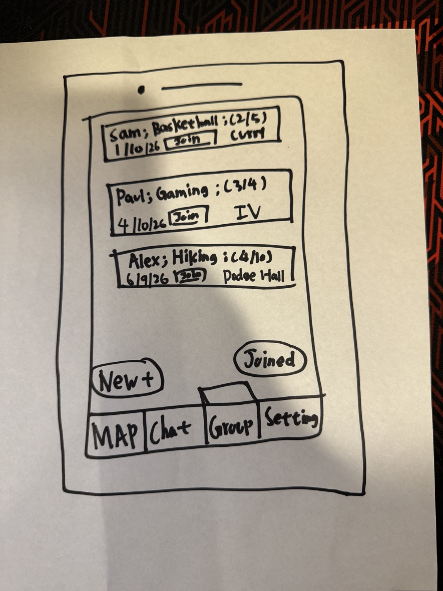
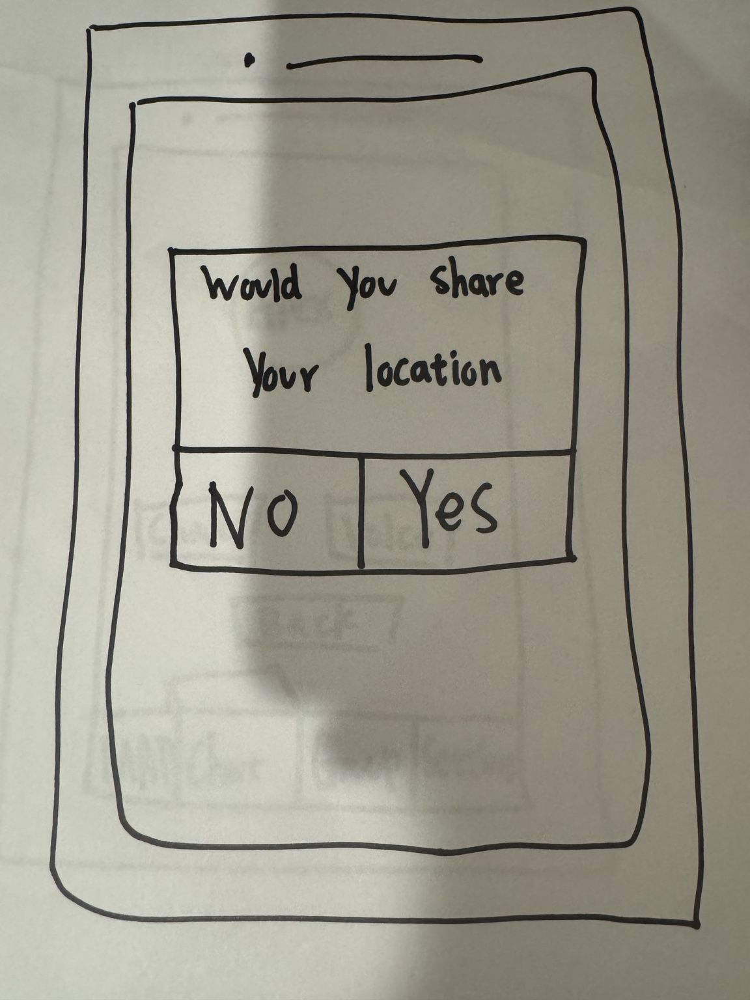
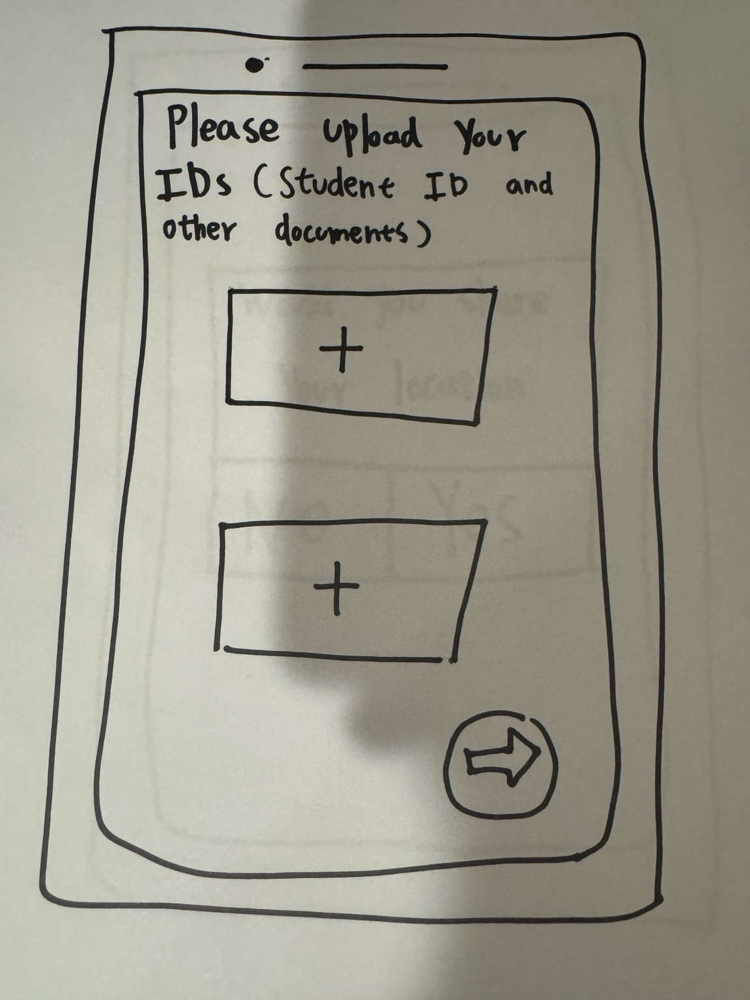
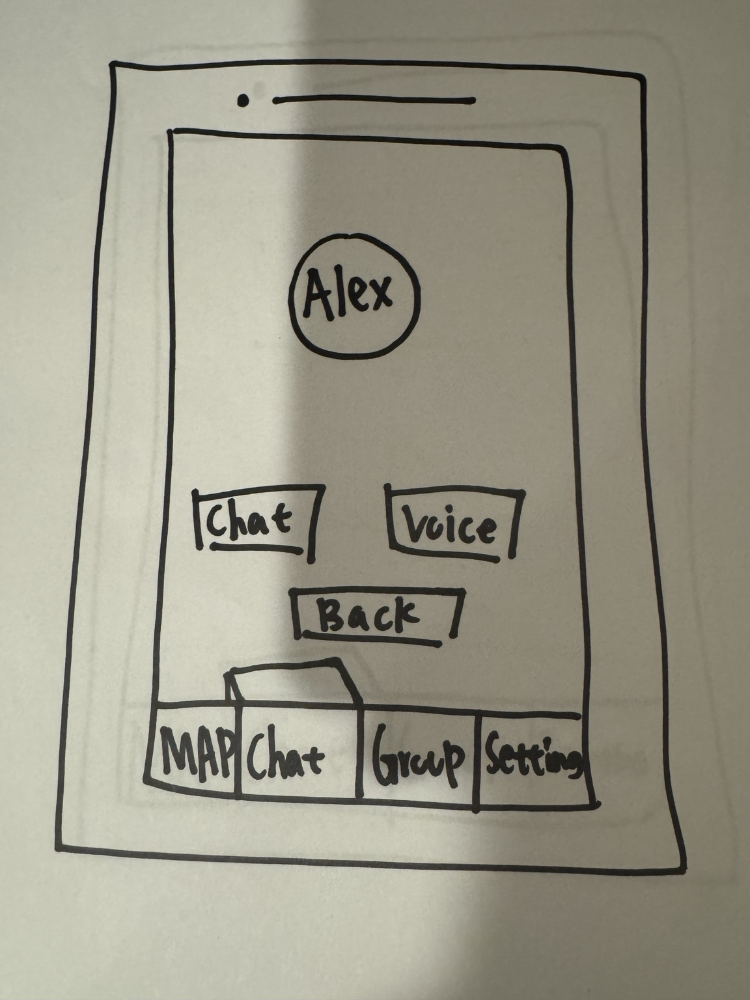
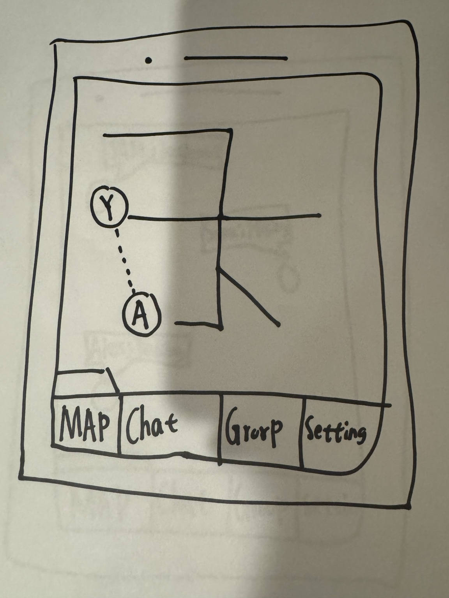
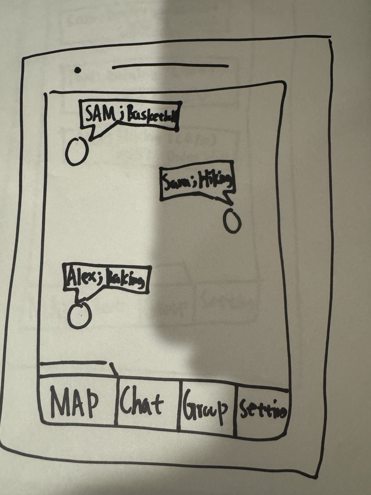
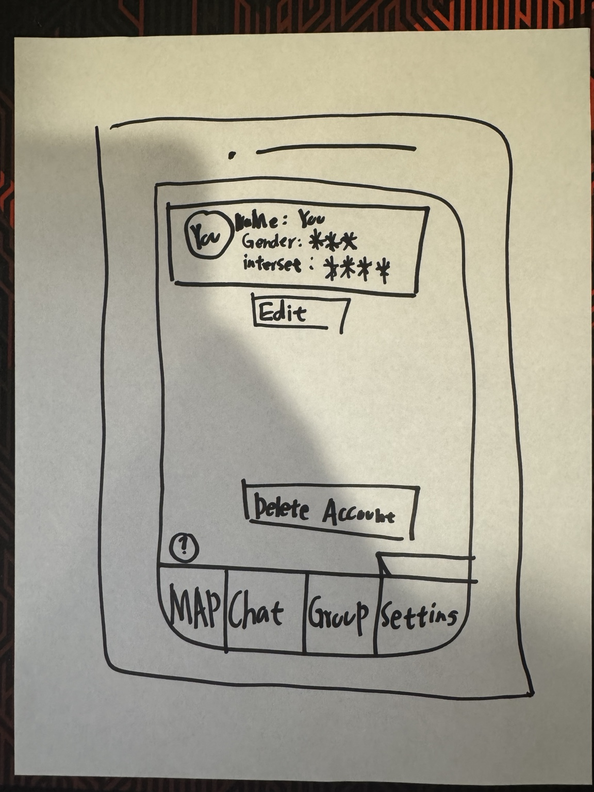
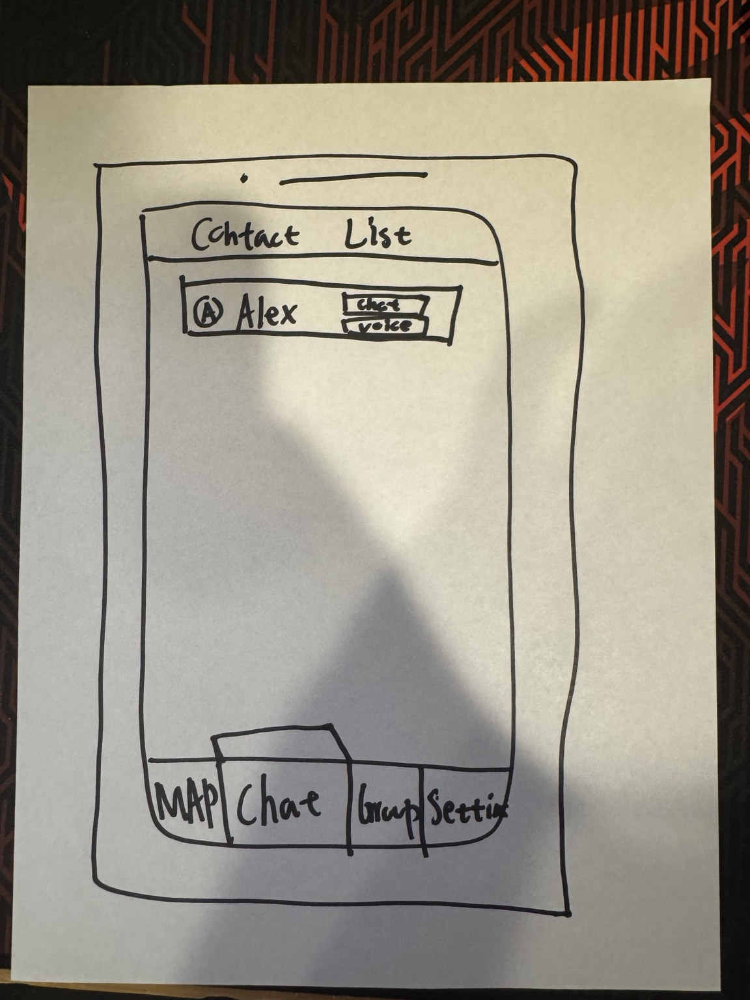

Heartline — Making Real Friends Without the Awkwardness
Heartline is a low-pressure social interface prototype designed to help Northeastern students bridge online discovery into real-life meetups,
reducing awkwardness and emotional risk through trust, clarity, and interest-based connection.
POV: Northeastern students who feel socially isolated need a low-pressure way to move from online interaction to real-world, in-person connection,
because fear of awkwardness and social missteps prevents them from taking the first step.
1) Problem & Why it Matters
Students are physically surrounded by peers yet still experience loneliness and social anxiety.
Many platforms encourage performance and passive connection rather than genuine in-person friendship.
Design goal: reduce social “activation energy” to start a friendship
We focused on reducing hesitation and uncertainty before a user takes social action.
That means clear next steps, trust signals, and low-pressure group entry rather than forcing one-on-one cold approaches.
Trust: identity verification + mutual acceptance before chat
Discovery: nearby users and interest-based groups
Coordination: map-based meetup context
3) Needfinding & Task Analysis
Task analysis revealed much of the “work” happens before anyone speaks: scanning, risk evaluation, and fear of embarrassment.
We designed the interface to intervene early by lowering emotional barriers and decision fatigue.
Requirement: reduce perceived emotional risk when initiating interaction
Requirement: enable zero-prep participation (fast to first action)
Heartline explores a simple structure: verified identity for trust, map-based discovery to make nearby connections actionable,
and groups to reduce the pressure of one-on-one initiation.
Verification: student ID/documents
Map: nearby users + meetup context
Groups: topic + capacity + location
Communication: chat + voice
5) Low-Fidelity Prototyping
We translated early ideas into paper screens to quickly test the interaction flow.
These sketches focused on the highest-impact actions: discovering nearby people, joining groups,
verifying identity, deciding on location sharing, contacting another user, and managing an account.
Discovery: map-based browsing of nearby users and shared interests
Trust: student verification and location-sharing decisions
Coordination: route/map concepts for meetups
Control: settings and contact list for longer-term use
Why Lo-Fi mattered
Lo-fi helped us spot hesitation points before investing in hi-fi visuals.
It also helped validate whether the product still felt “low pressure” while supporting real-life meetups.
Clarity: do users know what to press next?
Trust: do users understand verification/location implications?
Discoverability: can users find map, groups, and actions quickly?
6) Low-Fidelity Prototype Gallery
Paper screens used to explore the core flow and test clarity, trust, navigation, and low-pressure interaction.

Group discovery Early group list with “Join” and a concept for separating discovery (New+) from participation (Joined).

Location sharing prompt Early prompt for location sharing; connects directly to privacy concerns and the idea of “drop-a-pin.”

Verification upload Student ID/documents upload as a trust mechanism; later iterations needed clearer expectations and progress feedback.

Contact action Simple, low-pressure next step after viewing a user: choose Chat or Voice.

Meetup route view Explores spatial coordination for in-person meetups; later informed map clarity and interaction cues.

Nearby users map Shows nearby people and interests to help find shared-context connection opportunities.

Settings / profile control Edit profile and delete account concepts; supports transparency and user control.

Contact list Quick access to established contacts with chat and voice actions—reduces friction over time.
7) Hi-Fidelity Prototype (Figma)
Embedded Figma prototype. If it doesn’t load, make sure Figma sharing is set to “Anyone with the link can view”.